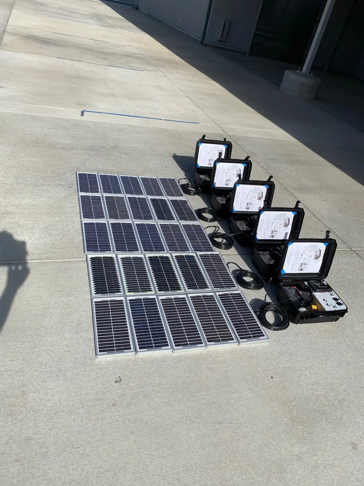
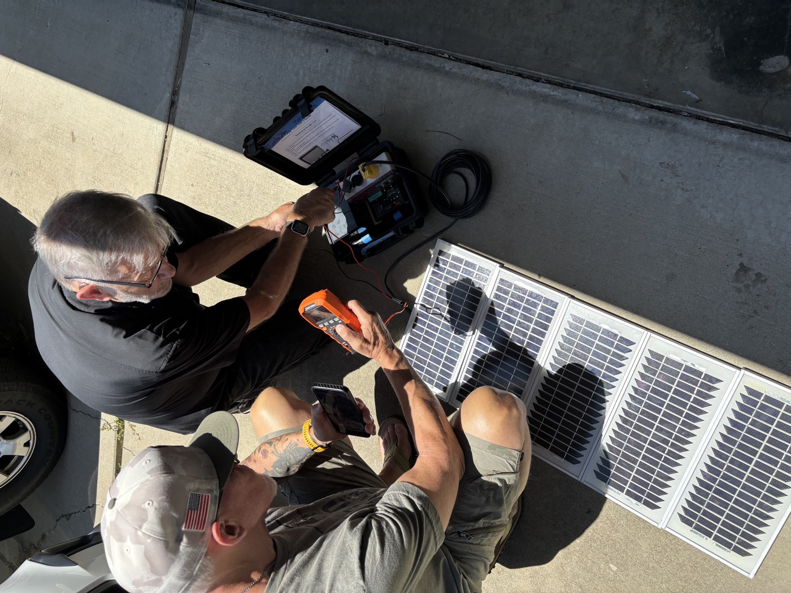

Every VillageServer kit needs reliable power. That can come from a wall outlet, a charged battery, a solar suitcase, or a combination — the goal is enough runtime for a full field session, with a backup plan when the first option fails.

The power reality in the field
Many communities VillageServer serves have unreliable grid power, no grid power at all, or expensive generator fuel. A good power plan doesn't ignore that — it builds around it. The library is useless if the server goes dark in the middle of a training session.
The good news: the Raspberry Pi and most VillageServer equipment run on very modest power. A standard high-capacity battery pack can run the server for a full day of use. Solar tops up the battery between sessions. Wall power is the simplest option when it's available.

Your power options
- Wall power — the simplest option when reliable; always add surge protection and label cables clearly
- Battery backup — essential for outages, movement between locations, and pre-session charging before grid power is available
- Solar suitcase — for off-grid settings; needs full sun, careful placement, and disciplined pre-session charging
- Generator support — useful for extended sessions but adds fuel cost, noise, and logistics
- Hybrid approach — charge the battery from solar during the day, run the session from battery in the evening
Planning power for a session
- Ask how long the session needs to run
Calculate hours needed plus a buffer for setup and troubleshooting. A three-hour session needs at least four hours of power capacity.
- Use local power when it's reliable
Plug into wall power with labeled cables and a surge protector. This is always the easiest path when available.
- Charge the battery fully before the session
Don't assume the battery arrived charged. Check it the night before. A partially charged battery running a projector, server, and speaker is a short session.
- Place solar panels in full sun
Even partial shade significantly reduces output. Check placement in the morning and recheck in the afternoon as shadows move.
- Test before the group arrives
Power on the server, confirm the Wi-Fi network appears, and check that the battery shows it's charging before people start connecting.
- Pack the same way every time
Return cables, adapters, solar panels, and the battery to the same labeled places in the case. Missing cables are the most common power problem.
The most common reason a field session fails isn't the content or the server. It's the power plan.
Download the Power Systems overview as a printable PDF for field briefings and kit planning.
Download Power Systems PDF